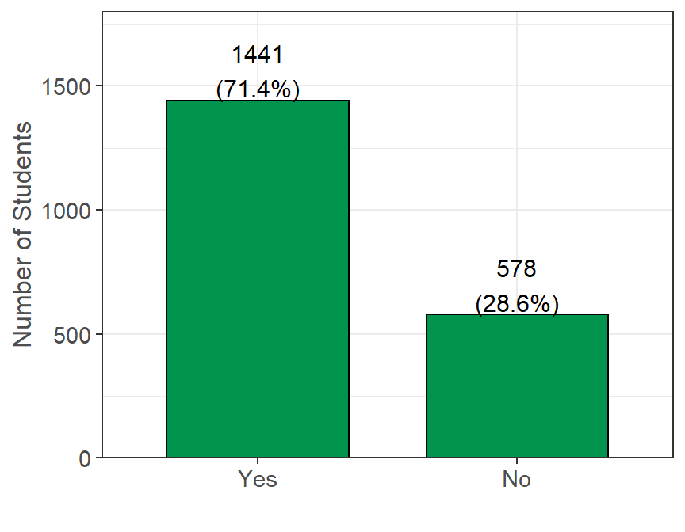
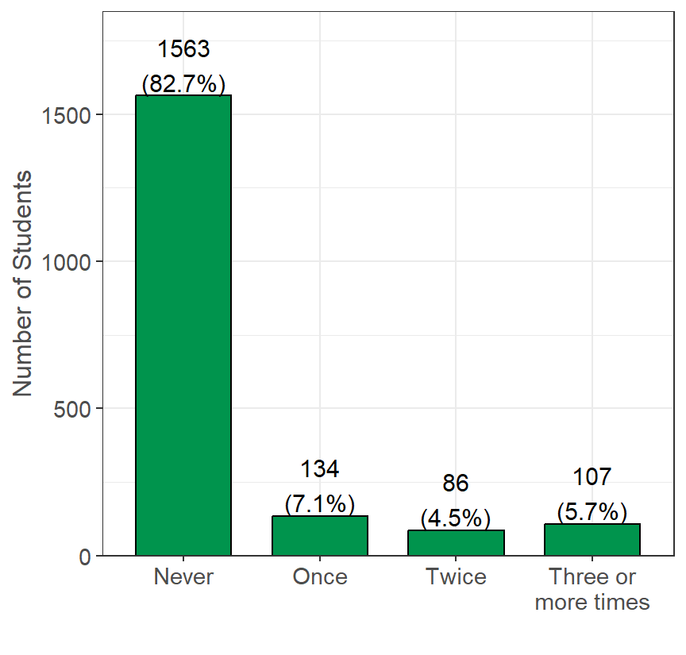
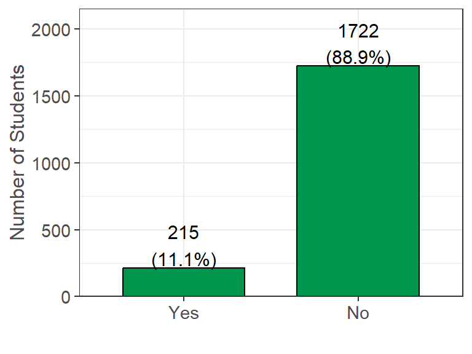

Housing
The following questions were asking in regards to students current and past housing situations. This includes changes due to COVID, if they are living near their college (with most schools being remote at the time of the survey), the type of home they current live in, and hardships that they faced in the past year with housing.
COVID Housing Impact
Has your housing stability changed due to COVID-19? (n=1937, 92% of 2110 reporting).
There are 1722 people that participated in the survey that claim their housing has not changed due to the impacts of COVID. There also are 215 people that say their housing situation did change due to the impacts of COVID.
If yes, why did your housing stability change due to COVID-19?
| Measure | Yes (%) |
|---|---|
| Finances changed due to lost (or reduced) off-campus job. (n = 211) | 113 (53.6%) |
| Finances changed due to lost (or reduced) on-campus job. (n = 211) | 39 (18.5%) |
| I was in unsafe housing. (n = 211) | 36 (17.1%) |
| Other (n = 211) | 36 (17.1%) |
| My roommate(s) finances changed. (n = 211) | 34 (16.1%) |
| I was unable to access on-campus housing. (n = 211) | 27 (12.8%) |
| I was unable to access off-campus housing. (n = 211) | 20 (9.5%) |
Living Near College
Are you currently living in the city/area in which you are enrolled in college? (n=2019, 96% of 2110 reporting).

There are 578 people that participated in the survey that do not currently live in the city/area of their enrolled college. There also are 1441 people that say they do live in the city/area of their enrolled college. This high “No” value could likely be due to many campuses being remote and students choosing to live at home or in an area with a lower cost of living.
Current Housing Situation
Which best describes your current housing situation?
| Current Housing Situation | Yes (%) |
|---|---|
| I live with parents or other relatives, not paying rent with my own money | 629/2004 (31.4%) |
| I live with parents or other relatives, paying rent with my own money | 488/2004 (24.4%) |
| I rent an apartment or house with roommates | 292/2004 (14.6%) |
| I rent an apartment or house without roommates | 239/2004 (11.9%) |
| I live in university housing or residence halls | 181/2004 (9.0%) |
| Other (Please specify): | 56/2004 (2.8%) |
| I own my own home | 53/2004 (2.6%) |
| I am temporarily living with friends or relatives without permanent housing (i.e. couch surfing) | 39/2004 (1.9%) |
| I am currently living at an outdoor location, abandoned building, car, or other area not meant for regular housing without permanent housing | 13/2004 (0.6%) |
| I live in transitional housing or a halfway home | 11/2004 (0.5%) |
| I am temporarily living in a homeless shelter without permanent housing | 2/2004 (0.1%) |
| I live in a sorority or fraternity house | 1/2004 (0.0%) |
In the past 12 months…
The following were asked as a series of Yes/No questions to help better understand the living situations of participating students.
| Yes (%) | |
|---|---|
| Was there a rent or mortgage increase that made it difficult to pay (n = 1864)? | 846 (45.4%) |
| Have you been unable to pay or underpaid a utility bill (n = 1886)? | 705 (37.4%) |
| Have you ever been late paying rent or mortgage (n = 1891)? | 627 (33.2%) |
| Have you been unable to pay or underpaid your rent or mortgage (n = 1849)? | 538 (29.1%) |
| Have you lived with others beyond the expected capacity of your house or apartment (n = 1939)? | 419 (21.6%) |
| Have you had to stay in a hostile housing environment or abusive relationship because you had no other place to live (n = 1945)? | 210 (10.8%) |
| Have you been asked to leave your home by someone you lived with (n = 1964)? | 177 (9.0%) |
| Have you been evicted (n = 1977)? | 50 (2.5%) |
In the last 12 months, what barriers have you experienced in accessing housing?
| Measure | Yes (%) |
|---|---|
| I have not experienced barriers related to accessing housing (n = 1983) | 1297 (65.4%) |
| Lack of deposit funds (n = 1983) | 372 (18.8%) |
| Lack of employment (n = 1983) | 348 (17.5%) |
| Lack first/last month's rent (n = 1983) | 290 (14.6%) |
| Low/lack of credit score (n = 1983) | 289 (14.6%) |
| Lack of co-signer (n = 1983) | 193 (9.7%) |
| Other (n = 1983) | 63 (3.2%) |
| Eviction on record (n = 1983) | 23 (1.2%) |

Over the past 12 months, the majority of people were never unsure of where they would be sleeping (1563 people ) or have not moved housing (1294 people). For uncertainty in where they would be sleeping, the remaining responses were mostly evenly distributed over the other options. For number of times that a person has moved, 458 people have claimed they moved once in the last 12 months and 144 people have moved twice. Only a small minority have moved 3 or more times in the last 12 months.
Sleeping Places
In the last 30 days, or in the past 12 months, have you slept in any of the following places?
Note: students were only allowed to chose either “last 30 days” or “past 12 months”, so students who selected past 12 months are interpreted as “over 30 days but less than 1 year”.
Stable
| Location | Last 30 days | In the past 12 months | Not Applicable |
|---|---|---|---|
| In a rented or owned house, mobile home, or apartment with my family (parent, guardian, relative or caretaker) | 416 (21.8%) | 844 (44.1%) | 843 (44.1%) |
| In a rented or owned house, mobile home, or apartment (alone or with roommates or friends) | 302 (15.7%) | 443 (23.0%) | 1321 (68.6%) |
| Campus or University Housing | 145 (7.5%) | 110 (5.7%) | 1713 (88.8%) |
| Temporarily staying with a relative, friend or couch surfing until I find other housing | 42 (2.2%) | 123 (6.4%) | 1770 (92.0%) |
| In a car, truck, van, RV or camper | 20 (1.0%) | 57 (3.0%) | 1859 (96.4%) |
| Temporarily at a hotel or motel without a permanent home to return to (not on vacation or business travel) | 14 (0.7%) | 51 (2.6%) | 1871 (96.8%) |
| In a transitional housing or independent living program | 12 (0.6%) | 18 (0.9%) | 1906 (98.6%) |
| In a closed area/space with a roof not meant for human habitation such as an abandoned building, garage, tent, etc. | 10 (0.5%) | 14 (0.7%) | 1916 (99.0%) |
| Outdoor location such as street, sidewalk, alley, park, etc. | 9 (0.5%) | 13 (0.7%) | 1914 (99.1%) |
| At a shelter | 5 (0.3%) | 10 (0.5%) | 1916 (99.3%) |
| Sorority/Fraternity house | 2 (0.1%) | 11 (0.6%) | 1922 (99.4%) |
| At a group home such as halfway house or residential program for mental health or substance abuse | 1 (0.1%) | 10 (0.5%) | 1925 (99.4%) |
Unstable Housing
In the past 12 months, if you have experienced unstable housing, what was the most common reason? (n=1909, 90% of 2110 reporting).

It seems that of the people who experienced unstable housing, the most common cause was not having enough money to cover housing expenses (396 people). The next most common was cause was from issues with roommates, both having conflicts (115 people) and them being unable/unwilling to pay living expenses (21 people).
Housing Insecure & Homeless
- Students with at least 3 housing insecurity indicators present are housing insecure, they are not otherwise (n=1846, 87% of 2110 reporting).
- Students with at least 1 homelessness insecurity indicator present are considered to have experience homelessness at date of survey (n=1919, 91% of 2110 reporting).
| Unstable Housing Type | Yes (%) |
|---|---|
| Housing Insecure | 34.3% |
| Homeless in the last year | 11.7% |
| Homeless in the last month | 4.2% |
Looking at the above table we can see that the majority of students are not considered to be housing insecure (1212 students, 65.7%), while the remaining students could be classified as housing insecure based on their indicators (634 students, 34.3%).
Looking at the table above, we can see the majority of student did not experience homelessness in either the past month (1839 students, 95.8%) or year (1695 students, 88.3%). However, we can see around 3x more students did experience homelessness during the past year (224 students, 11.7%) compared to during the past month (80 students, 4.2%).